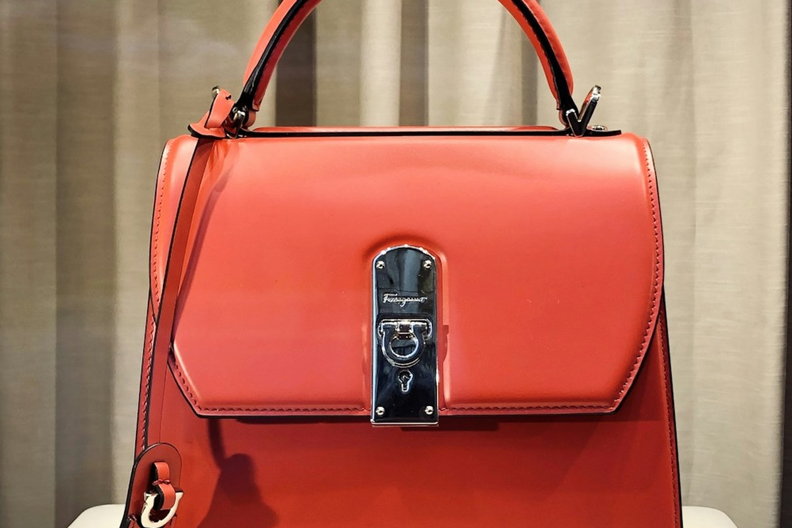
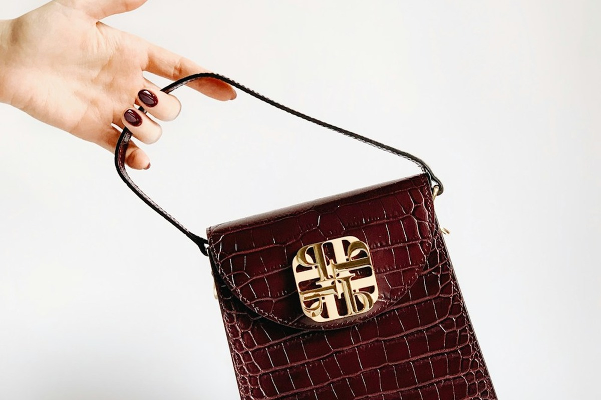

Centuries of Maroquinerie, Forged Anew
Founded on the uncompromising pursuit of permanent leather goods, Reticule Canyon honors the legendary guilds of European saddle-makers and bag artisans through honest hands and pure materials.
The Rejection of Ephemeral Luxury
The modern luxury bag industry has succumbed to programmed obsolescence: cardboard core reinforcements, automated nylon stitching, and chemical resin paint that chips within seasons.
Reticule Canyon was established in 2014 as a defiant return to archival permanence. We believe an authentic leather bag must be built to withstand decades of relentless handling, developing character and grace rather than falling into degradation.

Heirloom Evening Bags Honed Over Generations
Our New York workshop creates bags designed to grace formal galas, private salons, and cultural premieres. From hand-burnished clutches to structural reticules, each piece is engineered with ergonomic hand balance and tactile comfort.
There are no motorized conveyor belts or robotic stitching stations in our atelier. Every curve, bevel, and stitch is calculated by an artisan who understands how leather breathes and responds to climatic change.

Single-Artisan Ownership
Unlike assembly lines where an operative repeats one micro-action hundreds of times per day, each Reticule Canyon handbag commission is assigned to a single master maroquinier from start to finish.
From the initial tactile grading of the hide bend to the hand-punching of awl slits and the final hot beeswax burnish, the craftsman signs their guild registry mark inside the hidden lining seam of the finished bag.
The Oak-Bark Tannage Vaults
Our leather is cured in century-old underground pit vats utilizing crushed oak bark, river water, and organic chestnuts. This slow, chemical-free process preserves the natural collagen bundle density of the hide, yielding an aroma and durability that petroleum-derived leathers cannot imitate.
Over years of use, the oils trapped within these botanical fibers migrate gently to the surface, healing minor scuffs and creating a lustrous, water-repellent patina celebrated by luxury bag collectors worldwide.
Experience the Atelier in Person
Visit our New York salon on Lexington Avenue to examine hide swatches, test saddle stitch resilience, and discuss custom dimensional bag commissions with our lead artisan.
Schedule Salon Consultation